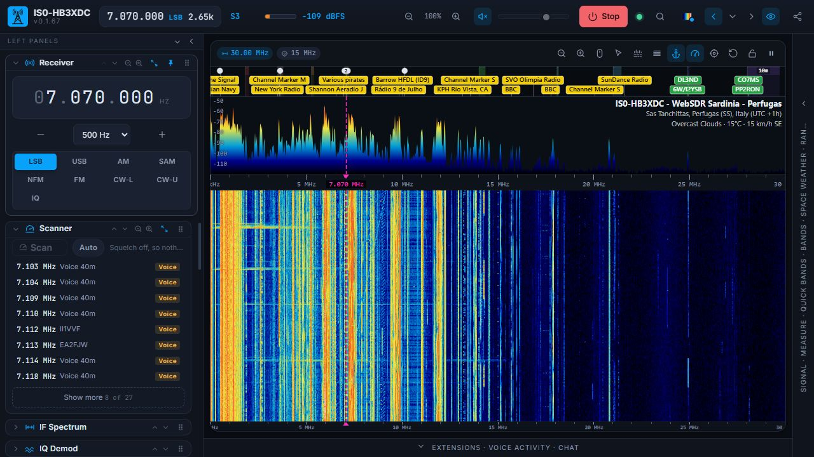
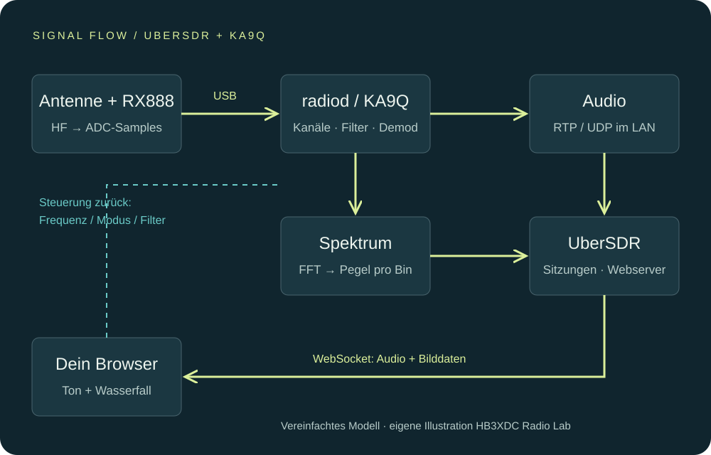

Vom Antennendraht zum Browser: wie UberSDR arbeitet
Ein technischer Rundgang durch ADC, digitale Kanäle, Netzwerk und Wasserfall – mit einer eigenen Signalketten-Grafik.

Aufnahme: HB3XDC Radio Lab
Ein Empfänger, viele unabhängige Hörplätze
Ein Web-Empfänger ist mehr als eine Webcam auf einem Funkgerät. Im hier beschriebenen UberSDR-Aufbau digitalisiert ein RX888 MKII einen breiten Frequenzbereich. Der Server erzeugt daraus mehrere schmale Empfangskanäle. Wer auf 80 m hört, muss deshalb nicht dieselbe Frequenz verwenden wie jemand auf 20 m. Grenzen setzen Rechner, Netz, Konfiguration und die verfügbaren Empfangskanäle.

1 · Die analoge Welt endet nicht an der USB-Buchse
Die Antenne liefert eine Spannung aus Nutzsignalen und Störungen. Vor der Digitalisierung müssen Pegel und Frequenzbereich passen. Übersteuerung oder unerwünschte Signale ausserhalb des Nutzbereichs lassen sich nicht allein durch hübschere Software beseitigen. Ein Analog-Digital-Wandler tastet das Eingangssignal in kurzen zeitlichen Abständen ab und stellt Zahlen bereit.
Bei realer Abtastung liegt die theoretische Nyquist-Grenze bei der halben Abtastrate; reale Filter brauchen einen Übergangsbereich. Im dokumentierten UberSDR-Beispiel passen 64,8 Millionen Samples pro Sekunde zu ungefähr 0–30 MHz, 129,6 Millionen zu ungefähr 0–60 MHz. Das sind Konfigurationsbeispiele mit passendem Frontend, keine allgemeine Zusage für jedes Gerät.
2 · radiod macht aus Breitband viele Kanäle
Die KA9Q-Komponente radiod übernimmt die SDR-Daten und führt digitale Frequenzumsetzung, Filterung und Demodulation aus. Ihr Mehrkanalansatz nutzt gemeinsame FFT-Arbeit, statt für jeden Zuhörer den gesamten Empfangsweg vollständig neu zu rechnen. Die Kanäle bleiben unabhängig abstimmbar.
Ein digitales Filter grenzt den interessierenden Ausschnitt ein. Ein SSB-Demodulator macht daraus Sprache; FM oder AM benötigen andere Verarbeitung. Eine zu breite Auswahl lässt unnötige Störungen durch, eine zu schmale kann Sprachanteile abschneiden. Frequenzwahl, Demodulation und Filterbreite gehören deshalb zusammen.
3 · UberSDR vermittelt zwischen Empfangsserver und Browser
Im Quellcode empfängt UberSDR Audio über RTP/UDP von radiod. Eine Kennung im RTP-Strom ordnet Daten dem passenden Kanal beziehungsweise der Sitzung zu. Der Go-Server bedient die Weboberfläche und übermittelt Audio und Spektrumsdaten über WebSocket-Verbindungen. Auch Frequenz-, Betriebsart- und Filterbefehle werden dort verarbeitet. Die konkrete Codierung ist versionsabhängig; der Code kennt unter anderem komprimiertes PCM und Opus.
Der normale Browser-Hörer erhält also nicht den kompletten hochratigen ADC-Datenstrom. Das erklärt, warum ein Breitbandempfänger viele Internetnutzer versorgen kann, ohne jedem die volle USB-Datenmenge zu schicken. Die Anzahl der Nutzer bleibt trotzdem eine praktische Ressourcenfrage.
4 · Der Wasserfall ist eine zweite Sicht auf dieselbe Funkwelt
Die Spektrumanalyse verteilt Signalenergie auf Frequenzbereiche. Wiederholte Spektren werden als farbige Zeilen dargestellt: So werden Träger, Sprachaktivität und Störungen über die Zeit sichtbar. Ein FFT-Bin ist kein einzelner unabhängiger Funkkanal. Auflösung, zeitliche Mittelung und Bildrate sind Darstellungsparameter mit unterschiedlichen Kompromissen.
Die Farbskala ordnet Pegel Farben zu. Wenn du den unteren Darstellungswert anhebst, wird der Hintergrund dunkler. Das Signal im Audio wird dadurch nicht automatisch besser. Für echte Vergleiche Einstellungen festhalten und den Signal-Rausch-Abstand sowie die Verständlichkeit gemeinsam betrachten.
5 · Weshalb der Ton verzögert ankommt
Digitalisierung, Verarbeitung, Pakettransport und Audiopuffer benötigen Zeit. Ein Puffer gleicht unregelmässig eintreffende Daten aus, vergrössert aber die Verzögerung. Bei QRM-Ausweichbetrieb ist das meist gut nutzbar; beim gleichzeitigen Abhören des lokalen und entfernten Empfängers entsteht dagegen schnell ein Echo. CAT-Abgleich steuert Frequenzen, beseitigt diese Latenz aber nicht.
Selbst ausprobieren
- Am Luzerner UberSDR ein SSB-Signal wählen und die Filterbreite schrittweise verändern.
- Danach nur die Wasserfall-Farbskala verändern. Höre bewusst, welche Änderung das Audio beeinflusst und welche nur das Bild.
- Den Versuch mit dem historischen Spektrogramm ergänzen. Das zeigt längerfristige Veränderungen statt nur den Augenblick.
Diese Signalkette erklärt UberSDR mit KA9Q. Andere WebSDR-Plattformen können die Verarbeitung anders verteilen. RX888 bezeichnet die Hardware; UberSDR, NovaSDR und PhantomSDR sind Softwareprojekte.